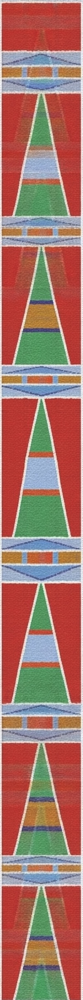
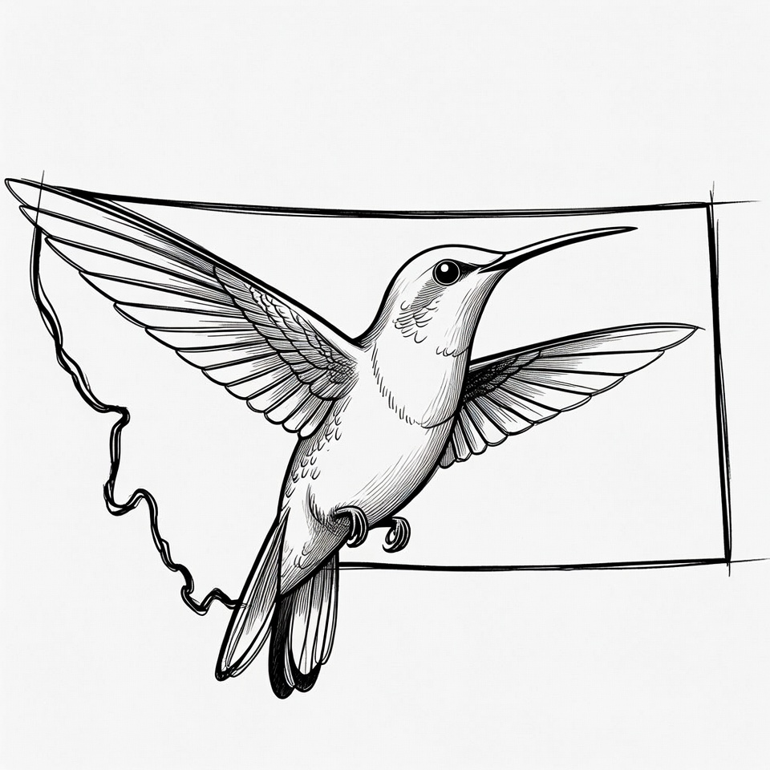
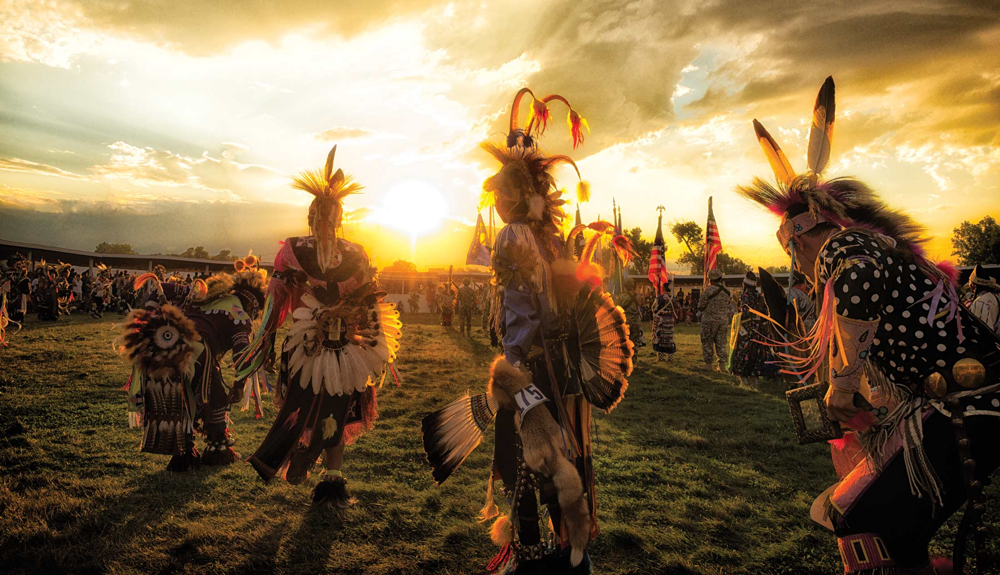
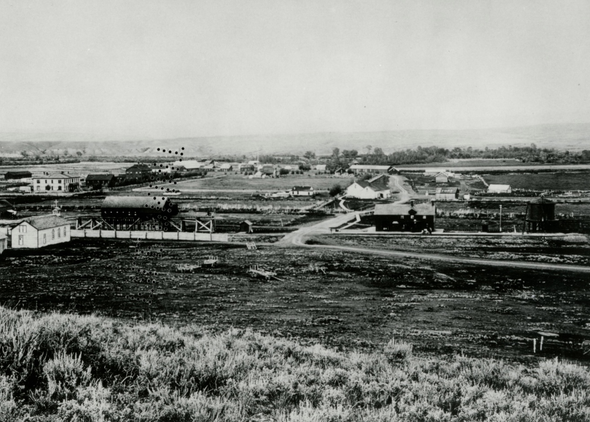
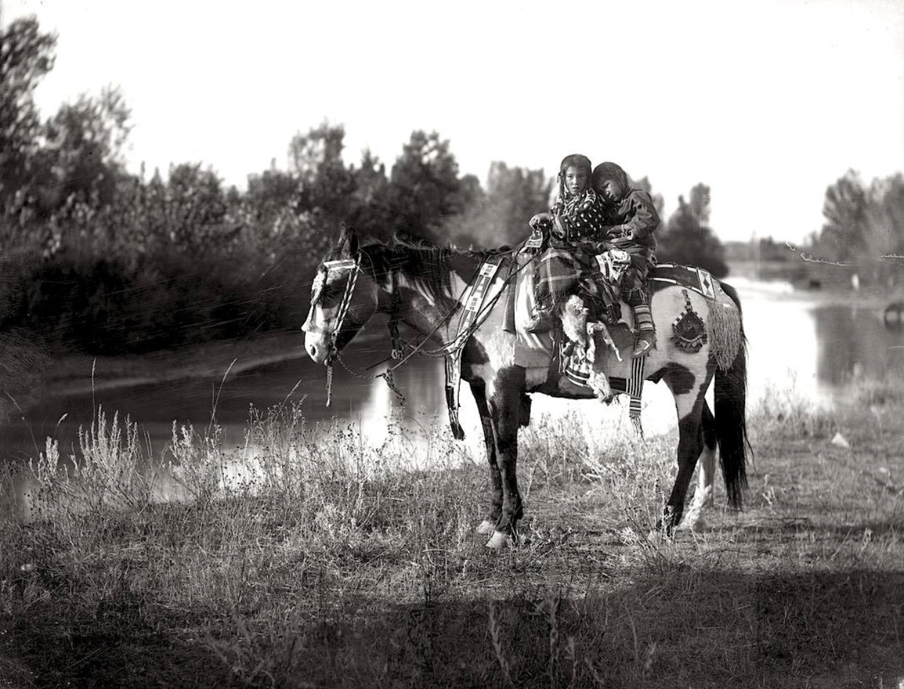
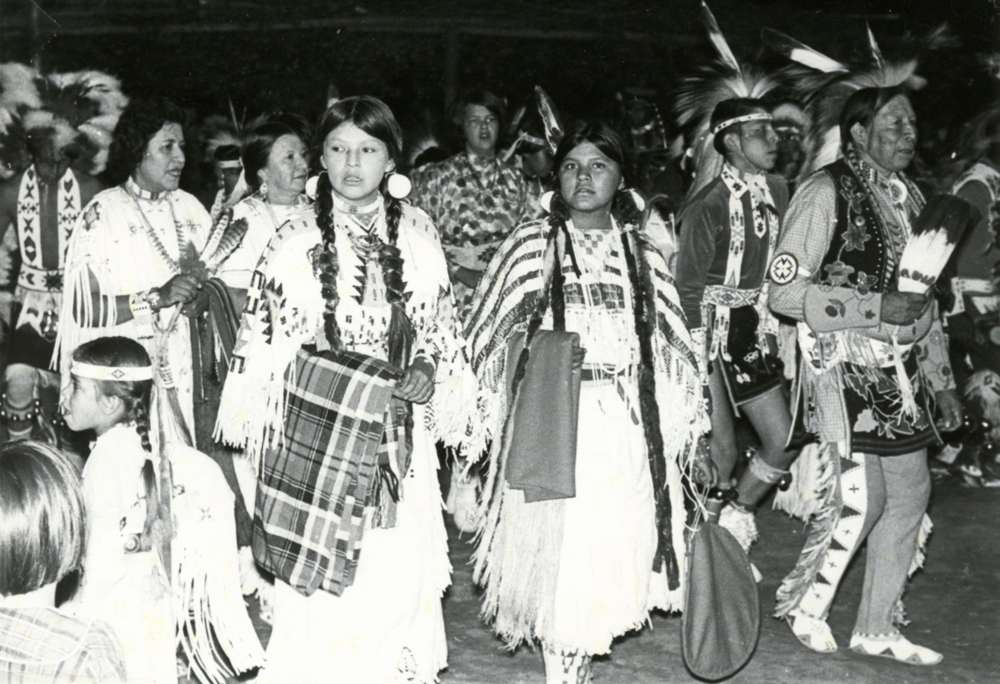

Doorway song or Serenading song Story and Doorway Song By: Corky Old Horn Crow Name: Ihchawaxxiash Translation of Crow Name: Throws Himself Away Ash bilian malaxuua Doorway Song Love Story: Bale bache kuushde heele baachaache Chiilapaashuua and Xooxaashbia/Xooxaasshiile Hilaake hinne buum biilaawehkuuk I have been asked to sing a song Ii ash bilian balaxuk It is a doorway song Heetaa alakuukaa hualaawe It came from long ago Biwasahkaale May Takes Gun, Old Coyote, Childs koon bii axpiichiiweek My grandmother May Takes Gun, Old Coyote, Childs told me the story Iiiilak ammalee Awasshee kuhtaahe When we were still with the Hitdatsa Koolaale Awasheeolak duxxiilaak At that time a group of Hitdatsa went on a raiding party Hileen Aashuuxaape isaashkua hambeekshiiwook hak We will take some horses from the Flat Head Kalakoon kan duxiilaauk Then they went on a raid Hileen duuxiash iisawuulak Several warriors Daaliio aa ii iilak Baaachuua Aashe kuhtaa ammishe kalakoon koo They went on and on and got to the Gallatin River, around there Aashuuxaape dioolak Met a party of Flatheads Kalakoon bachiook Then they battled Hinne iiichin dutchiwiiosh akaasheeolak The raiding party encountered a surprise attack Bachiiolak heeleen hinne duuxiash One of the men in the raiding party Bachiiolak heeleen hawatak Chiilapaashuush huuk huuk One of the men in the war party was named Bull Head Heelak koo Chiilapaashuush huua itchuupe ootaahuuk Then Bull Head’s ankle was fractured Kalakoon axpe hileen Aashuuxaapesh chipxussaak axpua kulutak kalakoon kala Then the war party pushed away the Flatheads and rescued Bull Head Dualaaliiok huuk aashe awuataa They say they came along the river Heelak bisshe lak dapiak alaakualittak diak The party killed a buffalo and made a travois Kookan duuxalualaaliioaa They dragged him in the travois Ammalapashkua hilaake eehk kalihchia anniio eehk tale alawasseelittuuash They arrived what is now Billings, Montana near the Conoco Power Plant area Eehk Iisaxpuatahche Aashe bakuutaale anniiosh dak kalihchialak oopkisheelak anniioosh Along the Elk River where the power plant is today Koo iak Aashe akkaako ammaakoo Across the river from the power plant on the high cliff Baahpe chechixiatesh iisaawaxse kook huuk Below the high cliffs Kuute balapaale annak koon hinne Chiilapaashuush axpammishe koote Where the brush was thick Bull Head’s partners Baaluuk hilite bi aalaliook It has been a long hard journey and you got me here Kala hileen baalitak I will stay here now koota ammaaluuash heeleetaah biialaliiok kala hileen baalitak You even brought me through a hard time, I will stay here now Aala kan biawakussaalak When it is spring time Diiwiiwoomah eehk aashawuataa I will go along the river and I will reach you Bash baashe diawak dii wiioommaachik I will make a boat to reach you Bassaannak kan diiwiioommaachik I will catch up with you in the Fall Baaleetaa kan biihpe kalaheettak kuukkala hileen baawaachik If not and the snow is has started coming down, I will have to stay here for good Heet aliatteedak daalah It's alright, go Ichuuke heeleenak daaotaa iilissaawattak chissaalahkuk huuk His younger brother who was in the party would start off and then he would cry and come back to his brother Aliatteetak biialatteetak daak It’s ok, I’m ok, go Biilaptaa beessuulak xaawiimmah It will not be good if both of us don’t make it home Heelak daak bashpilaxpaakua chiiwaah So, go home and tell our family Biihiileelak baakoon baaliichik aaliatteetak That I am here and I’m doing ok and it’s ok Bi aliateetak daalah I’m ok, go Heelak daaolak Then they left Daamnaa ashe diiolak When the party arrived home Kalakoon biakalishtalak heeleelak hinne akiikshe kook huuk koo Chilapaashuush huuah Then, a young woman who was Bull Head’s girlfriend wondered Heeleelak heeleelassaalak Kalakoon Wondered and he was not among the ones who returned home Shootaa Chilapaashuush How is Bull Head Koo iisaakshe hawatak One of the men Iichuupe ooshissuum Fractured his ankle Iiiilak alakoole diawak itchiiwak, iilak aashe Iichilikaash Aashe koon balapaale satchim koon alakoole diawaak itchiiwak buook We made a place for him way down there along the Elk River, there where the brush is thick, there we made a good place for him, then we came Heem hinne bachuupe chipdak baaleewimmaachik Then when my ankle heals I will go Biialatteetak kandaalah heem eehk buuok He said, “I’m alright, go now.” So we came Koo biakalishte baaleewiawaak shoolaakashtak bii chiiwaah heelak This young woman said, “I want to go there, tell me exactly where he is.” Koon koo iisaakshe Then that young man Chilaakussaalak baammaxe iicheem ooak uuweem aapaa ooh heelak baawaalaatak itchewaak alixiase Said, “Come back tomorrow morning with a good buckskin with red clay and I will draw a good map.” Iixiassee itchiiwaalak I will make a good map Kala iiliatak ii alapasshish daaleewialaalak Now use it to go his way Iihase koo wia ammaaimiteeche ahaachiichetaah There may have been other stipulations attached but that was all I knew Kala iilahkootak kalakoon hinne baammaxxe ammaalaatuash kalakoon kuulaak kala huuk hush So then she carried her map on a piece of buckskin and started on her journey Huulaawe deelaa kala baakoo saamnak hiliawik heessuuk She came a long ways, however many days she traveled, it was not said Heet huuaweeaa deelaa iixiassahkuash kuhta ammisshe koon huak kalakoon kan balaxik huuk But she traveled a long ways until she recognized the landmarks on her map, so she started singing “Song” Awa chisshe kaate moohik eele My love I came Bii chicheessee lachi boohik I am so lonesome I came Dii awaxpe wiawak ii waluu haawik I want to marry you so Bii chicheesaam boohik I am so lonesome I came Heelaak huuk huuk ko biakaalishte So this young woman came Haalaak huu cheeluk huuk So it was said, that she came Daashe Xooxaash Bia haak chii Xooxaasshiile huucheeluk Her name was Corn Woman or Yellow Corn. That was what she was called Heelakkoo Chiilapaashuua huah eehkkaa baakoonbaalish kaat beesh hiiloosh saapdak biihiichicheewik So then, the person they call Bull Head said, “Oh, oh I was doing fine, I think something is approaching me.” Heeleelak ooliakaattaa Then again he heard singing “Song” Iwakooshia aalaak huulak iiwaakooshialaalaawak huulak She sang as she was walking toward the place Baa alakootiileettakdaa Xooxaash bia dii heelak He said, “I know it cannot be true, but is that you Corn Woman?” Aa biim mook Yes, it’s me, I came Aa biihiileelak heelak Yes, I’m here Kalakoon daam naa hilak Then she approached him Kala koon bachohchiikaapak They greeted each other Kala koon kan daakuukaattuuk huuk Then, they went home together Ammalee bachee kosh deek huulak kala heele baachaache kook haak biichiiwaaok I was told that this was the greatest story about a woman going after a man Biiwassaakaale hiiliatahcheeluk haak My own grandmother said, “This is how it was meant to happen.” Biiaxpiichiweek She told me this story Iilak alasheewe kukkala kook How I said it is how it is “CUT” Ihchawaxxiash biish It’s me, Throws Himself Away Basahkaale koon bii axbiichiweem Kookakaa sheewaak I have just repeated what my grandmother told me.
Iichiila -Horse
| Crow | Meaning |
|---|---|
| a'hoo | thank you |
| Akíssatdee Isbaapúua | Veterans Day |
| aléekaashe | the time of year when it is very hot |
| Ammaaéetchiichiwaau | The time of year when they tell the ancient stories |
| Ammaalaahuwishkaáshe | Integrity |
| annissúua | dance arena, powwow grounds |
| apée | Cold |
| awasíia | the time of year when the grass appears after winter |
| áxxaashe íishisshee | Cold weather forecast |
| Báalee | winter |
| baáhkusahpua | Seven days of severe cold weather / seven-day storm |
| Baapbaaliinneetalápasshile | Saturday |
| Baapbaaliinneeté | Sunday |
| Baapbassée | Monday |
| Baapiichiaxxó | Friday |
| Baapiiláawiia | Wednesday |
| Baapiilúupe | Tuesday |
| Baapiishoopé | Thursday |
| baasaxpilúua | powwow |
| baatalíahche | to harvest |
| Baawixóoliche | November |
| Balapulé Pásshuhkuueetak | to be so full from eating, it hurts. |
| Baleéwaalasshihchitaahile | Critical Thinkers |
| Baleewaalaásdee | Empathetic |
| basáaannisshiwio | the time in fall when we will dance |
| basée | fall or autumn |
| Batchiwaalaálio | Communicators |
| bíawaksaanxalaahachke | Spring Equinox |
| bíihpe / bíia | to snow / snow, fallen snow |
| bikkaaapíisshisshiia | the time of year when heat shimmers rise from the grass |
| Bilítaachiia iiaxpíluupe | December |
| Bilítaachiia iichiaxxó | May |
| Bilítaachiia iihawátahpe | September |
| Bilítaachiia iiláawiia | March |
| Bilítaachiia iilúupahpe | August |
| Bilítaachiia iipilaké | October; Tenth Moon |
| Bilítaachiiawassee | January |
| Bilítaachiipiishilee | February |
| Bilítaachiipumme (i) | February |
| Buluhpashúa | apple or blue plum |
| Bulúxchilattache | ice is breaking up |
| bulúxe alasatchikaáshe | Ice is at its thickest |
| búupchilio | football |
| Chichúche | Hardin, MT |
| chilía-k | It is cold |
| Daásdee | to love someone |
| Dakáakannuusuua | Thanksgiving |
| dakáakiskoochiia | turkey |
| Diiawachisshik | I love you |
| Ihkúalassee | Persevere |
| Ihkummíile | Adaptable |
| ítchi-k | good |
| Ítchik daluúom! | It’s good you’ve come! |
| póopahte annáakbisuua | The time of year when owls have their young |
| Shóotaachi | How are you? |
| Xawuhxáwua | to be a crunching sound |
| Xawuhxáwuatchee | to make a crunching sound |
Many tribes in Montana, including the Crow, used Plains Indian Sign Language (PISL) to communicate across language barriers. This visual language allowed for trade, diplomacy, and storytelling among different nations.